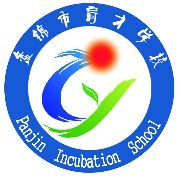

盘锦市育才学校是一所集小学、初中、高中为一体的高规格、高起点的寄宿制、全封闭管理、开放办学的非营利性民办学校。 学校占地120亩，格调高雅大气，设施齐备，功能齐全，是集美化、绿化、亮化、香化于一身的育人雅境。育才学校规模不断扩大，办学条件不断完善，我们拥有一支师德高尚、业务精湛，具有团队精神和创新能力的教师团队。默默耕耘、无私奉献是我们的教职；严谨规范、精益求精是我们的专业精神；人性为本、爱心至上是我们永恒的信念；育才人秉承“德育为先，质量第一，学生为本，和谐发展”的办学理念。 学校始终坚持“以学生发展为根本，以教师发展为关键，以服务发展为保障，以创新发展为动力”，打造文明和谐校园。推行“以德育为先导，以教学为中心，以科研为突破口”的策略，倡导“仁爱、敬业、笃学、善教”的教风和“勤学、善思、厚积、有恒”的学风。坚持“制度第一，人文关怀”的现代管理思想，“德育为先、质量第一、学生为本、和谐发展”的办学理念，凭借拼搏进取的精神，让育才学校焕发出勃勃生机。一所与时俱进、乘势而上的育才学校正跻身于名校之林。“做家长信赖的教师，创社会认可的学校，办人民满意的教育”是育才人的心声。育才发展的历史，是一份喜悦，一份荣耀，更是一份激情，一份责任！展望未来，育才人将怀着感恩的心，继往开来，与时俱进，勇于创新，锐意进取，爱岗敬业，无私奉献，在办好人民满意的优质教育路上昂首阔步！
